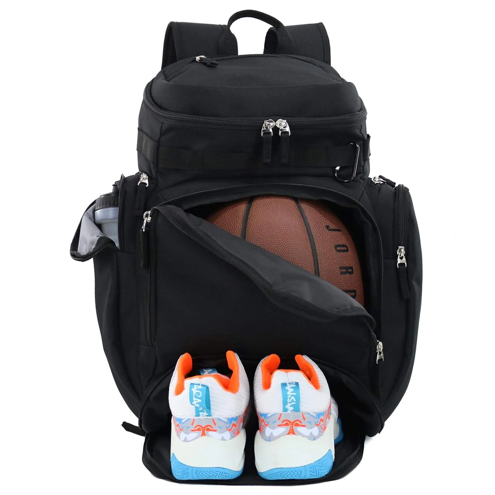

O tecido define a aparência, o toque, o peso, a resistência e boa parte do custo de uma mochila. Ele também limita a personalização: nem toda técnica funciona em todo material. A comparação abaixo cobre os tecidos que usamos na produção B2B da LS Confecções, com o uso indicado e os cuidados de cada um.
Antes de comparar: o que significa 600D
O número seguido de "D" é o denier, unidade de titulação do fio. Um denier equivale à massa, em gramas, de 9.000 metros de fio; quanto maior o número, mais grosso o fio (Audaces). Um nylon 600D usa fio mais grosso que um 210D e, em geral, resulta em tecido mais encorpado.
O denier sozinho não mede qualidade. A resistência final depende também da fibra, da trama, da densidade de fios e do revestimento (PU ou PVC no avesso, por exemplo). Por isso comparamos tecidos na mão e na peça piloto, não só pela ficha.
Nylon: o equilíbrio para uso diário
O nylon é leve, resiste bem à abrasão e, com revestimento no avesso, segura respingos de água. As gramaturas mais comuns em mochila são 420D, 600D e 900D. Aceita bem silk e bordado.
Melhor uso: mochilas escolares, urbanas e esportivas, em que a peça é carregada todo dia e precisa durar sem ficar pesada.
Poliéster: custo menor e a única base para sublimação
No visual, o poliéster se parece com o nylon. Costuma custar menos e é o tecido indicado para sublimação, porque a tinta sublimática se fixa em fibras de poliéster e não em fibras naturais como o algodão (Graphics Pro). Quanto maior a proporção de poliéster no tecido, mais viva fica a estampa.
Melhor uso: brindes corporativos, linhas promocionais e peças com estampa colorida em toda a superfície.
Lona de algodão: visual natural e toque encorpado
A lona (canvas) tem toque firme e aparência mais artesanal. Ganha marcas de uso com o tempo, o que muitas marcas autorais tratam como parte do produto. Pesa mais que os sintéticos e absorve água se não receber acabamento impermeabilizante.
Melhor uso: totes, ecobags e mochilas urbanas de marcas de moda ou com proposta mais natural.
Cordura: quando a resistência é a prioridade
CORDURA® é uma marca registrada de tecidos técnicos, não um tipo genérico de fibra. A linha Ballistic, por exemplo, usa filamentos de nylon 6,6 de alta tenacidade, e o fabricante a descreve como de resistência elevada a rasgo e abrasão (ficha técnica CORDURA). O custo é mais alto que o do nylon comum.
Melhor uso: mochilas táticas, linhas outdoor, bolsas de ferramenta e produtos vendidos com promessa de durabilidade.
Oxford: trama visível e bom custo
Oxford é um tipo de trama, geralmente em poliéster, com aspecto levemente texturizado. Com resinagem, fica mais firme e resiste melhor à água. Na nossa produção, é uma opção comum para quem quer aparência técnica sem o custo da cordura.
Melhor uso: mochilas corporativas, bolsas de viagem e sacochilas que precisam aguentar chuva.
Sarja e brim: estrutura com cara de vestuário
Tecidos de algodão próximos do universo da moda. Combinam com marcas que já vendem roupa e querem acessórios que conversem com a coleção. O bordado fica com bom acabamento nesses tecidos.
Melhor uso: shoulder bags, pochetes e coleções cápsula.
Comparativo rápido
| Tecido | Ponto forte | Atenção | Personalização indicada |
|---|---|---|---|
| Nylon 420D a 900D | Leve e resistente à abrasão | Custo médio | Silk, bordado |
| Poliéster | Custo menor | Toque mais simples | Sublimação, silk |
| Lona de algodão | Visual natural, encorpado | Mais pesada, absorve água | Silk, bordado |
| Cordura | Resistência a rasgo e abrasão | Custo alto | Bordado, silk, etiqueta |
| Oxford | Aparência técnica, bom custo | Varia muito entre fornecedores | Silk, bordado |
| Sarja / brim | Cara de vestuário | Menos resistente à água | Bordado |
Como escolher: quatro perguntas
- Qual o uso real? Dia a dia urbano pede nylon; outdoor e uso pesado pedem cordura; moda pede lona ou sarja.
- Qual personalização você quer? Estampa em toda a peça exige poliéster. Bordado funciona bem em lona, sarja e nylon.
- Qual o preço-alvo de venda? O tecido é um dos itens que mais pesam no custo. Defina material e margem juntos.
- O que a marca quer comunicar? Técnica, natural ou urbana: o material é percebido antes do logo.
Aviamentos pesam tanto quanto o tecido
Na nossa experiência, as reclamações mais comuns em mochila não vêm do tecido: vêm do zíper que trava, da fivela que quebra e da alça que descostura. Em linhas de maior valor, usamos zíperes de marca reconhecida, fivelas e reguladores mais robustos, alças acolchoadas e reforço nos pontos de carga. O forro também conta: ele protege o conteúdo e esconde o acabamento interno das costuras.
E a sustentabilidade?
Algodão cru, lona reciclada e poliéster reciclado (RPET, feito de garrafas PET) são as opções mais pedidas por marcas com proposta ambiental. Vale cuidado no discurso: o estudo de ciclo de vida da agência ambiental dinamarquesa concluiu que sacolas de algodão precisam de muitas reutilizações para compensar o impacto da produção da fibra (Miljøstyrelsen, 2018). O argumento mais honesto é durabilidade e uso prolongado. Esse raciocínio vale também para ecobags personalizadas.
Teste antes do lote
A forma segura de decidir é a peça piloto: produzimos a amostra no tecido escolhido, em até 15 dias, para você aprovar toque, caimento e personalização. Veja também quanto custa fabricar uma mochila e como funciona a fabricação de mochilas personalizadas a partir de 20 peças por modelo e cor.
Perguntas frequentes
Qual o tecido mais resistente para mochila?
Entre os que usamos, a cordura é a opção mais resistente a rasgo e abrasão, indicada para uso tático e outdoor. Para o dia a dia, o nylon 600D atende bem com custo menor.
O que significa 600D no tecido?
D é o denier, que mede a espessura do fio: um denier equivale a 1 grama por 9.000 metros de fio. 600D usa fio mais grosso que 210D, mas a resistência final também depende da trama e do revestimento.
Qual tecido aceita estampa colorida em toda a peça?
O poliéster, por sublimação. A tinta sublimática se fixa em fibra de poliéster e não em algodão, por isso lona e sarja pedem silk ou bordado.
Posso testar o tecido antes de fechar o pedido?
Sim. Produzimos uma peça piloto no tecido escolhido, em até 15 dias, para você aprovar toque, caimento e personalização antes do lote.
Fontes
- Como medir fios de tecido: entenda o método de titulação, Audaces.
- CORDURA® Ballistic Fabric: Tech Sheet, CORDURA Brand (INVISTA).
- Why Doesn't Sublimation Work on Cotton?, Graphics Pro.
- Life Cycle Assessment of grocery carrier bags (Environmental Project no. 1985), Miljøstyrelsen, Danish Environmental Protection Agency, 2018.
Pronto para produzir com a LS Confecções?
Fabricação B2B de bolsas, mochilas e acessórios personalizados a partir de 20 unidades, em São Paulo. Fale direto com nosso comercial e receba uma proposta em minutos.
Solicitar orçamento